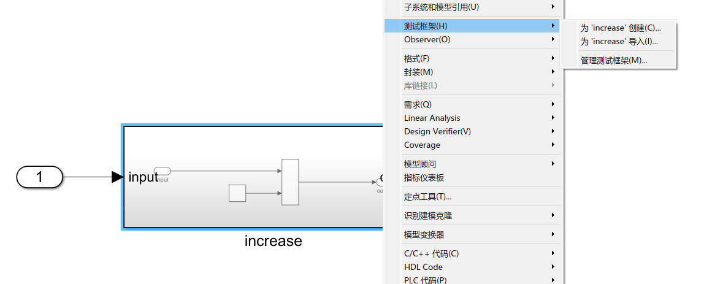
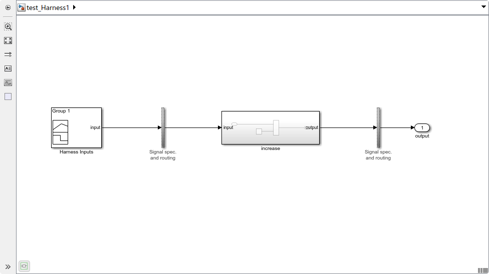
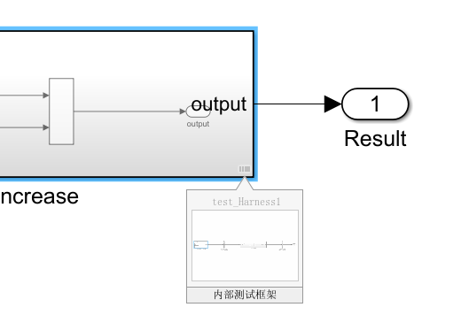
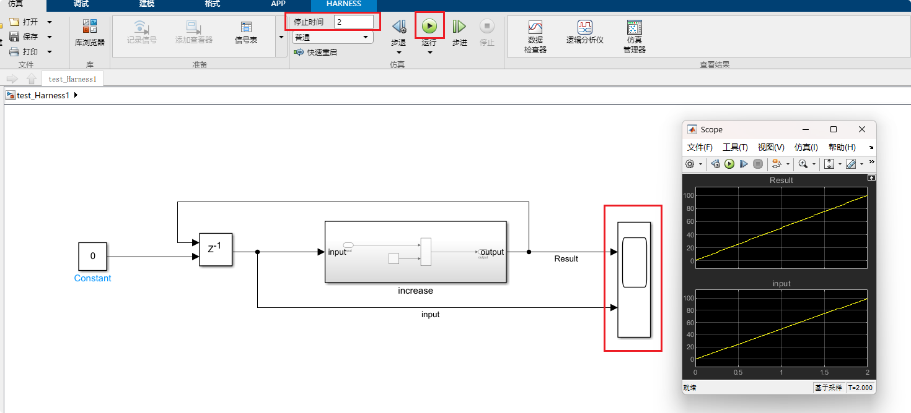
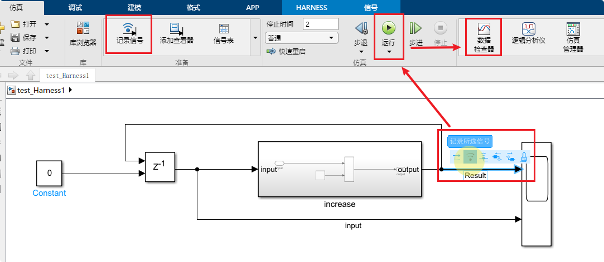

仿真
调试
Simulink提供全面的调试工具, 可设置调试时间, 暂停时间, 设置断点, 查看信号当前值等等
- 叠加信息: 运行时将模块或信号的数据显示出来, 例如运行顺序, 模块类型, 信号属性等等
- 工具: 可向前向后追溯选中信号, 注释模块, 显示信号当前值等等
- 断点:
- 信号条件断点, 当信号条件满足特定情况时暂停
- 时间断点, 运行到暂停时间时自动暂停
- 编译
- 更新模型: 检测整个模型内是否缺少必要量(例如模型中用到的变量缺少定义)
- 更新模块: 更新所在模块
- 更新图: 更新当前所在StateFlow
- 仿真 设置仿真时间, 开始运行, 步进步退等
新建测试框架
创建测试框架
为当前模块添加仿真测试框架 模块右键 -> 测试框架 -> 新建测试框架

创建仿真测试框架前需保证当前模型运行无报错, 因为创建测试框架时, Simulink会尝试运行该模型 2021版本Matlab测试框架会保存在模型文件中, 不会另外生成单独测试模型

管理框架
新建测试框架的模块有下角有特定图标, 点击可显示为该模块添加的测试框架(也可通过模块右键 -> 测试框架 -> 管理测试框架用来打开删除框架)

编辑测试框架
新建框架时, 可选择基础的输出与输出(普通输入输出端口, 使用SignalBuilder作为输入, Scope作为输出等等), 测试框架本质上仍是一个普通的模型, 可对其做任何对模型可做的更改
仿真
激活仿真
将以上框架修改, 将上个周期的输出作为输入再次计算, 添加Scope观测窗口, 设置仿真时间为2s, 点击运行

Scope像示波器一样记录仿真过程中其输入端口的输入值
信号观测
Scope示波器
Scope模块记录仿真时输入端口输入的信号值的变化
输入端口的信号线上需要命名, 该命名会体现在Scope显示框上用于区分不同信号
Display显示模块
Display显示当前值, 不可回放(不建议用)
数据查看器

使用数据查看器回放数据前, 必须记录该信号(记录后, 信号接口处会出现一个类似Wifi信号强度的图标)
运行完毕后, 点击数据查看器可回放数据. 当模型比较复杂需要记录多个模块, 多层信号时, 使用数据查看器比较方便快捷, 同时数据查看器还支持数据对比, 可以对比本次与上次之间的差别